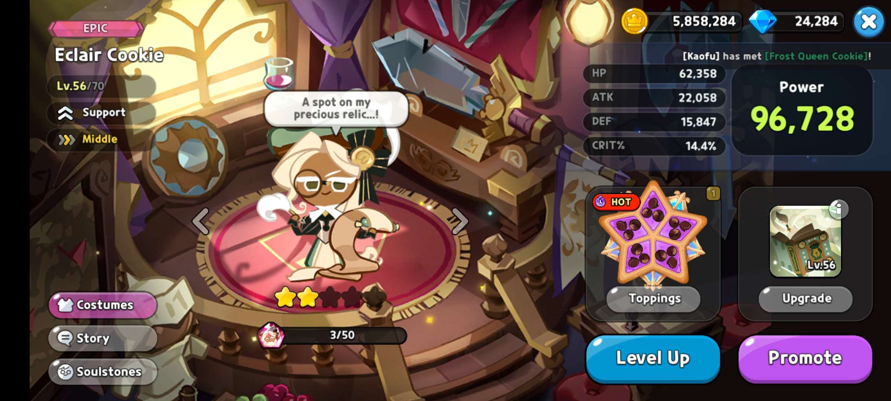

Why Eclair Cookie is a Woman

Elcair cookie presents extremely feminine and her actions appear very delicate.
Elcair Cookie can be seen often wearing a beauitful green dress with a corset. While dawning a giant eclair on her head as a hat. Hence the name Eclair Cookie. She has incredibly long hair to go with such beautiful attire.
On top of presenting extremely feminine she also behaves and presents very feminine. While woodworking she will try to keep appearances and not to damage anything on her. This goes for any chore you push Eclair Cookie to do. She will add a very womanly touch to any chore she does which is extremely different from any male cookies and can be seen using the same animations as other female cookies.


Eclair cookie is referred to in game and by himself as a man. He has a traditionally feminine appearance, such as long hair and a corset, but that is because he is based on a Renaissance style. Corsets and long hair were considered to be masculine traits during that time. Because of the fluidity of gender roles and norms, we now think of these traits as feminine. Regardless of how he looks,
I think the most important issue is that he simply says he is a man, therefore he is one. Also his voice is very deep.